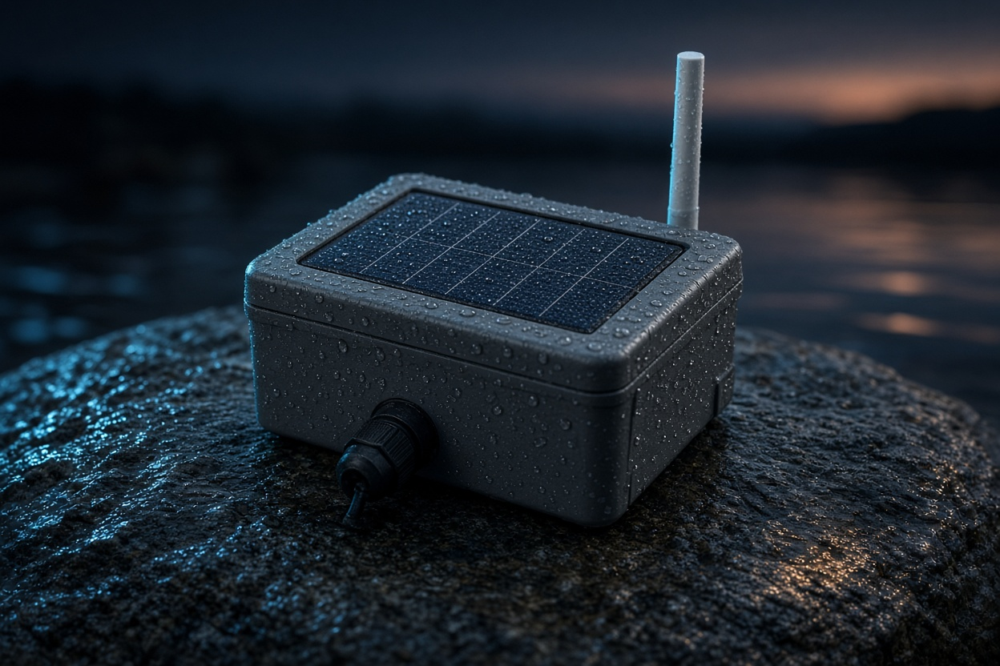
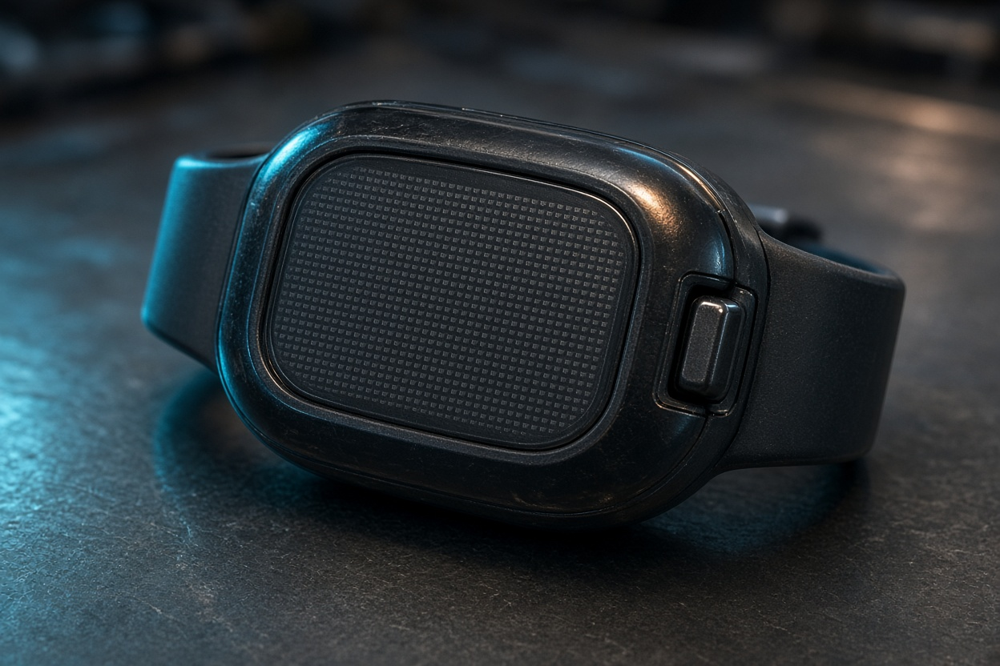

The photos are study models drawn for this page, not hardware I own. The first five use a gasket and screws, so a dead node can be opened. The rules under the photos are the repair bar. They are not true of a built box yet.

Study model of a field node. Solar lid, whip, cable gland. Not a built unit.

Study model of a later household alert. No screen. One button. Not part of the first five.
Compute and radio
Edge node, not a gateway PC. The radio firmware we intend to stand on is MeshCore.
ESP32-S3 for sensors, sleep, and the frame.
SX1276 for the sub-GHz hop. 433, 868, or 915 MHz, whichever the site is allowed to use.
A short tag on the flood frame before it is forwarded. Four bytes, not a full signature. See the protocol page.
Power
All five nodes carry the same kind of pack. A watch, if it is ever built, gets a different cell because it is a different job.
Node: LiFePO4, a cutoff so it is not flattened, and a small panel. That is the stress test.
Watch, later: LTO, because a deep discharge hurts it less. Not on the first five.
Harvest: a small panel on every node that stays outside. Five watts is a target, not a part I have bought.
Sensing
The first five carry stage. Rain if a tipping bucket is cheap enough. The rest of this list waits until a corridor has stayed up.
Stage and rain: non-contact level, tipping bucket.
Ground and sound, later: a geophone, and a hydrophone on its own path so a flood alert is never blocked behind an audio file.
Roles
Role
Draft build
What failure looks like
Sensing node
ESP32-S3, SX1276, LiFePO4, small solar panel
Keeps a local cache. Does not need the gateway to decide that the river is rising.
Ridgeline relay
Same radio, a better antenna, store-and-forward
If the second canyon node goes quiet, the first node aims a slower frame at the ridge directly.
Regional gateway
Edge buffer, uplink only when Starlink or cellular is actually up
The mesh still forwards. The uplink is a copy, not the alarm path.
Conservation audio
Hydrophone on a separate stream
Audio never shares the alert queue. A recording can wait. A surge cannot. Not on the first five.
Repair rules
These are the rules the first five are meant to test. No connector has been chosen. No box has been built.
Plugs that do not fit wrong
Each lead gets a shape of its own. The panel plug does not seat in the sensor socket. Polarity is not a guess.
Blue. Level and rain.
Amber. Panel.
Red. LiFePO4 pack.
Swap a part, no compiler
The aim is that a new sensor, snapped on, is recognized at boot and the frame changes to match. The first firmware can be dumber than that. If a swap needs a laptop, the rule has failed.
One button, no screen
Press it. The blink says what to carry back up the hill.
Green Leave it.
Amber Pack.
Blue Sensor lead.
Red Radio.
A drawing in the lid, sealed in, with pictures instead of a language. The first five will show whether a stranger can follow it. The note on the outside of the box, in the language spoken there, is a separate thing. That language is not chosen yet.
A watch, after the corridor stays up
A phone dies with the grid and the cell site. The household form of this is a sealed wrist device: solar, one button, a buzzer, a motor. It is not part of the first five. Those end in a log, and a buzzer only while a person is there to hear a false alarm and forgive it.
Choice
Draft
Why
Phantom time
No RTC chip and no coin cell
After boot the watch has uptime only. The first signed beacon sets network time. Until then it can still sound if the frame says surge.
LTO cell
Lithium titanate, plus a tiny panel
Chosen because a deep discharge and tropical heat hurt it less than other lithium cells. Cycle life is a property of the cell we buy, not a promise of years.
Potting
Resin around the electronics
The watch is not meant to be opened. Condensation and a flood are the environment, so the shell is the maintenance plan. The river nodes are the opposite: screws, not resin.
Both ways
Buzzer, motor, guarded button
A surge from upstream wakes the household. The button sends a distress frame back toward the barangay hall.